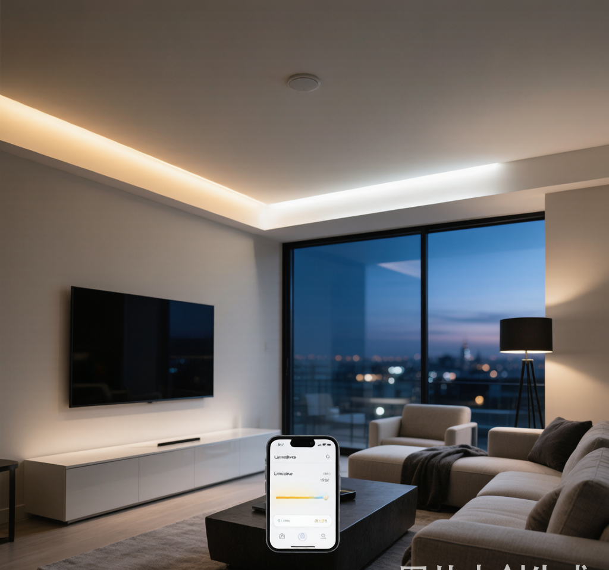

做智能家居的朋友，大概率都被灯带折腾过。
明明在APP里选了3000K暖白光，抬头一看却泛着冷蓝；想把客厅氛围灯调到5%亮度，结果灯带开始鬼畜闪烁；买了RGBCW全彩灯带，结果米家只识别出RGB，冷暖白光根本调不了。
你第一反应可能是"灯带买差了"，于是换更贵的COB灯带、换品牌、换网关。钱花了不少，问题照样出现。
真相是：90%的灯带调光调色翻车，根子不在灯带，而在驱动电源。
双色温驱动，到底在驱动什么？
普通LED驱动只干一件事：把220V交流电转成恒定的直流电，让灯珠稳定发光。
但双色温灯带不一样。它内部有两路灯珠：一路暖白（比如2700K）、一路冷白（比如6500K）。双色温驱动要同时控制这两路输出的电流比例，才能混合出3000K、4000K、5000K等中间色温。
这意味着，双色温驱动不仅是电源，更是一个"调色 mixer"。它的好坏直接决定：
- 色温是否准确（会不会偏蓝或偏黄）
- 亮度是否平滑（低亮度会不会闪烁）
- 两路白光是否独立可控（RGBCW能否真正五通道）
- 长期稳定性（用半年后是否色漂）
最常见的4种翻车现场
1. 色温漂移：APP显示4000K，实际像阴天
原因通常是驱动输出电压不稳。24V恒压灯带，电压偏移1V就可能导致冷暖两路LED发光比例变化，肉眼就能察觉色偏。
廉价驱动空载和带载时电压波动可能超过±3%，而好的驱动能控制在±0.5V以内。
2. 低亮度频闪：调到10%以下开始闪
这是PWM调光频率过低导致的。人眼看不到的闪烁，手机摄像头能看到条纹，长时间看更容易视觉疲劳。
新国标GB/T 31831-2025对频闪有明确要求：Pst≤1.0、SVM≤1.8。符合这个标准的驱动，PWM频率通常要足够高。
3. RGBCW只调出RGB，白光通道没反应
很多便宜驱动虽然标称"RGBCW"，但只支持三路PWM输出，把冷暖白合并成一个通道。结果APP里调的是"白光亮度"，根本调不了色温。
真正的RGBCW需要至少5路独立输出：R、G、B、暖白、冷白。
4. 长距离铺设后，末端明显偏冷
这是因为电压降。电流从驱动出来，沿着灯带跑5米、10米后，末端电压变低。低压下蓝光芯片更容易显色，所以末端会偏蓝。
超过5米就要考虑分段供电，而不是一味换更大功率的驱动。
选型先看这6个硬指标
| 指标 | 合格线 | 为什么重要 |
|---|---|---|
| 输出电压精度 | 24V ±0.5V | 电压不稳直接导致色温漂移 |
| 输出纹波 | ≤±5% | 纹波大会引发频闪和通信模块重启 |
| PWM调光深度 | 0.1%-100% | 低亮度不闪烁、不跳变 |
| PWM频率 | ≥3kHz（越高越好） | 低频频闪伤眼，高频更稳定 |
| 通道数 | CCT需2路独立；RGBCW需5路 | 决定能否真正调色温 |
| 待机功耗 | ≤0.5W | 新国标GB/T 31831-2025要求 |
4种主流协议怎么选？
| 协议 | 控制方式 | 优点 | 缺点 | 适合场景 |
|---|---|---|---|---|
| 可控硅/TRIAC | 切相调光 | 直接替换旧开关 | 低亮易闪、兼容性差 | 老房改造 |
| 0-10V | 模拟电压信号 | 成本低、调光平滑 | 需单独信号线 | 商业照明、无主灯 |
| DALI-2 | 数字总线 | 单灯寻址、双路DT8 | 成本高、需调试 | 高端住宅、酒店 |
| Zigbee/蓝牙Mesh | 无线 | 免布线、可联动 | 依赖网关稳定性 | 智能家居 |
2026年的趋势是协议融合。很多驱动同时支持0-10V+DALI+Zigbee，一个硬件适配多种控制方式，减少SKU库存。
按场景选型：别只看价格
橱柜/镜前/背景氛围灯带
- 功率：50W-150W
- 重点：体积要小、能塞进灯槽；支持双路CCT独立调光；最好带灌胶防潮
- 协议：蓝牙Mesh或Zigbee，联动智能家居
客厅天花灯槽（5-10米）
- 功率：200W-300W
- 重点：24V稳压精度高；支持分段供电；低亮不闪
- 协议：0-10V或蓝牙Mesh 2.0
商业空间/展厅
- 功率：300W以上
- 重点：恒功率设计（调色温时亮度不变）、EMC认证、5年质保
- 协议：DALI-2 DT8，支持中央集控
两个实操避坑技巧
技巧一：收货先测电压精度
用万用表测驱动空载和带载时的输出电压。如果24V驱动带载后掉到23V以下，说明稳压能力不够，后期一定色漂。
技巧二：用手机慢动作测频闪
晚上把灯带调到5%亮度，打开手机慢动作视频拍摄。画面里有条纹波动，说明PWM频率低或驱动调光算法差。
写在最后
灯带调光调色是个系统工程。灯带负责"发光"，驱动负责"怎么发光"。很多人愿意花高价买COB灯带，却舍不得配一个好驱动，结果高价灯带被廉价驱动拖垮。
2026年，新国标已经把频闪、待机功耗、智能控制接口变成硬性要求。采购双色温驱动时，别再只看功率和价格， voltage accuracy、PWM frequency、通道独立性、认证资质，才是决定体验的关键。
如果你正在做智能灯带方案，欢迎联系我们获取双色温驱动选型和样品支持。
耐利普科技（Nexlamp）专注涂鸦Zigbee智能照明产品，提供0-10V/DALI/Zigbee/蓝牙Mesh全协议双色温驱动方案。联系电话：13825496855